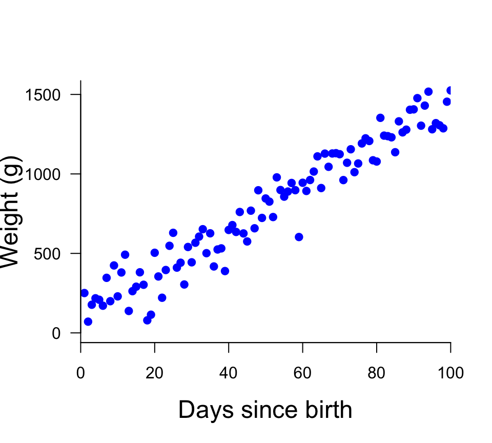
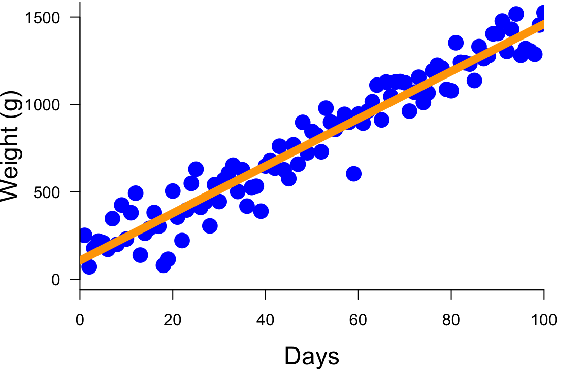
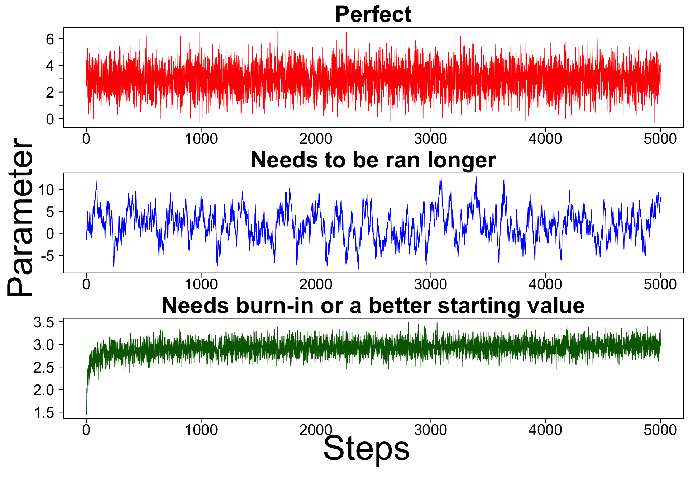
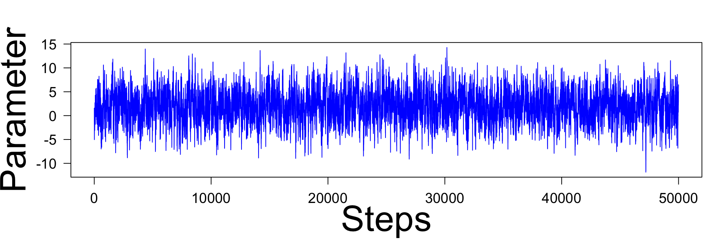

When we look at the equation above, it might be difficult to visualize exactly what are the
Posterior
Likelihood
Prior
Understanding this will be essential for the course.
Let’s use a small example to make sure we understand each part of the Bayesian model well.
Illustrative example
For this example, we will be interested in building a model to study the breeding success of the kākāpō. The kākāpō (Strigops habroptilus) is a critically endangered large (fat!) flightless nocturnal parrot found solely on the islands of Whenua Hou, Pukenui and Te Kākahu-o-Tamatea in New-Zealand. There are currently only 236 adults kākāpō on Earth. So studying its breeding success can be very valuable for the survival of the species
Sirocco Probably the most popular kākāpō.
If you wonder why Sirocco is popular, take a look at this YouTube video
Illustrative example
For the sake of this example, let’s focus on three female kākāpō, the number of eggs they laid and the number of chicks that hatched. Typically a kākāpō lay 1 to 4 eggs every breeding period, which occur every 2 to 4 years. In this example, we will assume we have data for the past 20 years (so, let’s assume we have data for the past 6 breeding period).
Kākāpō
Eggs laid
Chick hatched
Bella
12
4
Wendy
10
5
Nora
16
5
Note Kākāpō names and number of hatched chicks are real (see the List of kakapo), while number of laid eggs were invented but follow what is expected from current research.
Illustrative example
Based on the available information
Available data
Information provided
Assumptions we made
We can assume rely on the Binomial distribution in this example.
Do you know why ?
Illustrative example
Likelihood
What is the probability distribution that a kākāpō will produce chicks during the 20-year period? \[
\begin{align}
\text{chick hatched} &\sim \text{Binomial}(p, \text{eggs laid}) \\
\end{align}
\]
This is the probability distribution associated to the kākāpō data.
It is called the likelihood.
Illustrative example
Likelihood
The likelihood is the product (\(\times\)) of the probabilities associated to each data point
\[L(\theta \mid x) = \prod_{i=1}^n P(x_i \mid \theta)\] where
\(P(x_i \mid \theta)\) is the function of a probability distribution function
\(x_i\) is the value associated to sample \(i\) out of \(n\) samples
\(\theta\) is the parameter associated to the model
In our example,
\(P(x_i \mid \theta)\) is the Binomial distribution function
\(x_i\) is the reproductive success of each kākāpō (\(i\)) over the 20 year period
\(\theta\) is the probability of reproductive success
# Datahatch <-c(4, 5, 5)eggs <-c(12, 10, 5)# log-likelihood functioncalc_ll <-function(x, hatch, eggs) {# Quick checkif(length(hatch) !=length(eggs)){stop("hatch and eggs must have the same length") }# log-likelihood res <-sum(-dbinom(hatch,size = eggs,prob = x,log =TRUE))return(res)}# Test a range of probability valuesprob_val <-seq(from =0, to =1,length.out =30)# Result objectlog_lik <-numeric(30L)for (i in1:length(prob_val)) { log_lik[i] <-calc_ll(prob_val[i],hatch = hatch,eggs = eggs)}par(cex =3)plot(prob_val, log_lik,type ="b",xlab ="Probability",ylab ="Log-likelihood")
As I hinted earlier, there are a number of ways to estimate the parameters of a Bayesian model. A common way to estimate Bayesian models is to rely on Markov Chain Monte Carlo (MCMC) or variants of it, including Hamiltonian Monte Carlo (HMC), which is used in Stan.
Typical reasons to favour MCMC
It is flexible
It can be applied to complex models such as models with multiple levels of hierarchy
Why should we learn about MCMC ?
The goal of this course is not to learn the intricacies of MCMC or HMC, but since we will play a lot with Stan, it is important to learn at least conceptually how MCMC and HMC work.
Markov Chain Monte Carlo (MCMC)
Historically, the developments of MCMC have been intimately linked with the arrival of computers. Specifically, the first developments and applications of MCMC were made in the early 1950’s at the Los Alamos laboratory.
MANIAC I is The first computer on which MCMC was implemented
Markov Chain Monte Carlo (MCMC)
A key figure in the development of MCMC was Arianna W. Rosenbluth, who was the first to implement an MCMC.
Arianna W. Rosenbluth (1927 - 2020)
Markov Chain Monte Carlo (MCMC)
To explain what is an MCMC, let’s imagine that we are interested in understanding how the mallard (Anas platyrhynchos) grows from hatchling to adult.
Markov Chain Monte Carlo (MCMC)
A simplistic statistical example
Let’s say that we are interested in modelling how male Mallard weight changes as they grow from hatching to adult. Here are some data obtained from a local Mallard duck farm.

Markov Chain Monte Carlo (MCMC)
A simplistic statistical example
A growth model can be constructed using a simple linear regression
\[y = \beta_0 + \beta x + \varepsilon\] From this model we can infer that the average weight of a Mallard duck when it hatches is 107 grams (intercept), and the average daily growth of the Mallard is 13.5 grams (slope).

Markov Chain Monte Carlo (MCMC)
A simplistic statistical example
Estimating the intercept and slope parameters of the simple linear regression can be done with an MCMC. This amount to sampling
In doing so, we are not focusing on finding the ‘best’ parameter values. Rather, we are focused on finding the distribution of best parameter values.
Markov Chain Monte Carlo (MCMC)
When using an MCMC, we are interested in sampling distributions to estimate the parameters of the model.
Technically, MCMC and HMC rely on different approaches to assess the structure of the distributions.
Markov Chain Monte Carlo (MCMC)
MCMC relies on using many random samples to assess the structure of the distribution.
Markov Chain Monte Carlo (MCMC)
Problems with Markov Chain Monte Carlo
A lot of tuning is required to find the best step length (between long and short steps)
Inefficient in high-dimensional spaces
Cannot easily search the entire likelihood space and thus cannot easily isolate local minima
Hamiltonian Monte Carlo
Hamiltonial Monte Carlo relies on Hamiltonian dynamics to assess the structure of the distribution.
Hamiltonian Monte Carlo
Solution brought by Hamiltonian Monte Carlo
Uses a gradient-based MCMC to reduce the random walk (hence reduce autocorrelation)
It is a “No-U-Turn Sampler” (NUTS)
If you do not fully get it (and even if you do), check out the Brilliantly wrong
Sampling the parameters
In MCMC and HMC, a lot of iterations need to be carried out to assess the distribution of parameters. But how many is enough ?
Here is a rough procedure to follow:
Perform a pilot run with a reduced number of iterations (e.g. 10) and measure the time it takes
Decide on a number of steps to use to obtain a result in a reasonable amount of time
Run the algorithm again !
Study the chain visually
Studying convergence

Studying convergence
Studying convergence
If we ran the same MCMC as above but instead for 50000 steps, we obtain

Note It is also possible to thin (record only the \(n^{\text{th}}\) iteration), but it is better to keep all iterations when possible. Actually, thinning should only be carried out when there are too many iterations for you to keep them on your computer and manipulate them. In short, thinning should be carried out only when your computer does not have enough memory to work with all iterations.
Studying convergence
Burn-in
Burn-in is throwing away some iterations at the beginning of the MCMC run